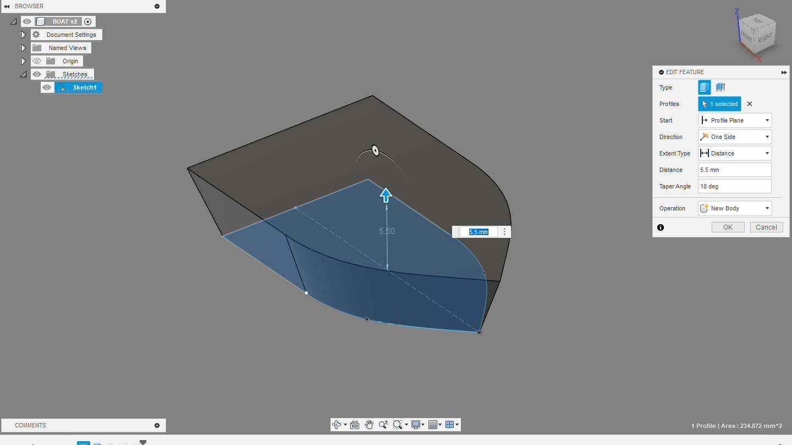

My mom went on a cruise where hiding ducks on the boat was almost like a cult activity. She had ordered a variation of ducks to hide, one of them being a packet of 100 3D printed ducks. She tasked me with the project of making a boat for them so she could put the 3D printed ducks inside 3D printed boats. It came out really well and it was very simple and easy to do. It required 1 sketch, and a tapered extrude. I then printed about 50 boats in a batch since they were small.